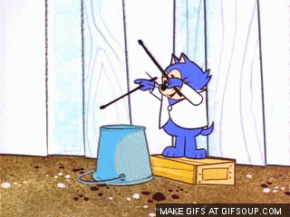
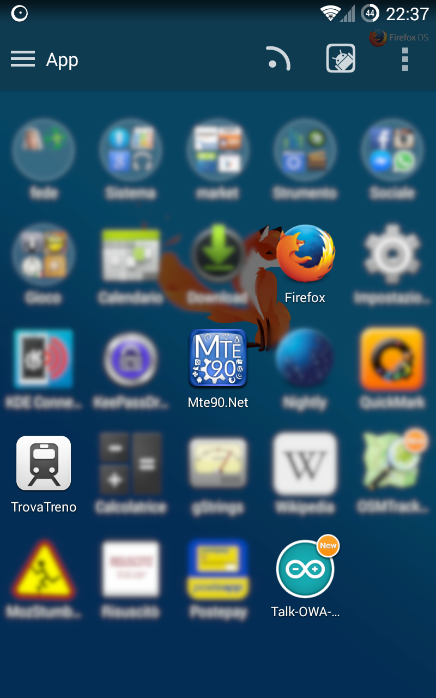

Il web, i maker e le Open Web App
Daniele "Mte90" Scasciafratte - Maker Faire Roma 2014
Chi sono
Una foto vale più di mille parole- Classe 1990
- Fanatico Open Source
- Debian user dal 2009
- Amante di KDE e delle Qt
- Wordpress Developer
- Firefox OS Training Lead per l'Italia
- Mozillian - Collaboratore attivo del progetto Mozilla
Facciamoci delle domande
Per gli utenti è più semplice:
- Scaricare un'app sul proprio smartphone (probabilmente multipiattaforma)?
- O
- Visitare un sito online?
- Ed
- Installarlo come se fosse un'app nativa?
- Infine
- Anche sul proprio computer?
- Per non farci mancare niente
- Caricarla su un marketplace libero, gratuito ed internazionale?
- Per dessert invece
- Potremmo farci anche il nostro marketplace!
- Oppure il dolce del giorno
- Far installare l'app dal nostro sito
- Con l'opzione
- Dall'interfaccia stessa
- Dimentico qualcosa?
- Il conto ed il digestivo, grazie

Open Web App
Perchè Open
- Realizzate con le tecnologie standard open per il web: HTML5, CSS, Javascript
- Presentate al W3C per una loro standardizzazione
Perchè Web
- Sfruttano il browser
- Compatibili con le tecnologie Mozilla: Firefox, Firefox for Android e Firefox OS
Perchè App
- Si installano nativamente sul proprio sistema
- Si comportano come se fossero un vero software
- Verrà avviata a tutto schermo
- Può essere sia online che locale
Requisiti
Per gli utenti:
Firefox o Firefox for Android o Firefox OS
Per gli sviluppatori:
Firefox per lo sviluppo
Firefox o Firefox for Android o Firefox OS (anche il simulatore) per il testing
Il proprio editor/IDE preferito
Ma le API?
Le API richiedono dei privilegi che vanno specificati per una corretta esecuzione.
Con JavaScript possiamo accedere alle API standard HTML5 e quelle proprietarie (in standardizzazione) del sistema.
WebTelephony, Vibration API, WebSMS, Idle API, Screen Orientation, Settings API, Power manager API, Mobile Connection API, TCP Socket API, Geolocation API, WiFi Information API, Device Storage API, Contacts API, Mouse Lock API, Open WebApps, WebBluetooth, Network Information API, Battery Status API, Alarm API, Browser API, Time/Clock API, Web Activities, Push Notification API, Permission API, WebFM API, FileHandle API, Network Stats API, WebPayment, IndexedDB, Archive API, Ambient Light Sensor API, Proximity Sensor, SystemXHR, WebNFC etc...
In sviluppo: WebUSB, WebSerial, WebMidi, Background Services, WebPrintAPI, PresentationAPI
https://wiki.mozilla.org/WebAPICome funziona a livello tecnico
- File manifest.webapp: La carta d'identità
- 4 righe di Javascript
Come funziona per l'utente
- Il sistema apre una finestra
- Chiede se installare
- Se conferma verrà installata
- Verrà piazzata l'icona dell'app su Firefox for Android o Firefox OS
- Verrà piazzato il collegamento nel menu di sistema con Firefox
I progetti esistenti
Implementare le funzionalità che abbiamo visto è molto semplice!
Rune Audio implementa un'Open Web App online (accede al web server) e mostra l'interfaccia web che è responsive e supporta gli eventi touch
In questo caso si tratta di un'app online ovvero hosted
support for firefox open web app #15Rune Audio
App locali?
Adesso vedremo un'app packaged che sfrutta la Notification API per informare l'utente e che accenda o spenga dei led
Sfruttando un'Arduino Yun con un server REST connesso ad internet.
Andando su http://mte90.github.io/Talk-OWA-App con Firefox verrà avviata l'installazione dell'app.
Firefox con notifiche
Android Launcher
Android con app avviata
Android con dimostrazione
Android con notifiche
Firefox OS Launcher
Firefox OS con app avviata

Firefox OS con notifiche
Codice JS per lo switch dei led
url_green_analog = 'http://' + $('.ip').val() + '/arduino/analog/6/';
$.get( url_green_digital, function( data ) {
$('.led-green').attr('checked', check_bool(data));
$('.led-green').click(function() {
if($(this).is(':checked')) {
url_green_ = url_green_analog + '200';
} else {
url_green_ = url_green_analog + '0';
}
$.get( url_green_, function( data ) { });
});
});
Codice JS per mostrare la notifica
url_green_digital = 'http://' + $('.ip').val() + '/arduino/digital/6/';
$.get( url_green_digital, function( data ) {
if (Notification.permission !== 'denied') {
Notification.requestPermission(function (permission) {
if(!('permission' in Notification)) {
Notification.permission = permission;
}
});
}
if (Notification.permission === 'granted') {
new Notification('Pin 6 Green Led', {
body : 'Pin state: ' + data
});
}
});
Cos'è Firefox OS
- Sistema operativo mobile completamente open source
- Kernel basato su Linux ed Android chiamato Gonk
- Motore grafico Gecko che elabora HTML5 CSS e Javascript
- Interfaccia grafica chiamata Gaia completamente in HTML5 CSS e Javascript
- Pensato per portare il web mobile a tutti
- Device a basso costo
- Intuitivo con alto controllo della privacy
- In vendita ufficiale in oltre 30 paesi
Firefox OS è disponibile per:
- Pandaboard
- Raspberry
- APC Rock
- Matchstick - https://hacks.mozilla.org/2014/09/matchstick-brings-firefox-os-to-your-hdtv-be-the-first-to-get-a-developer-stick/
In modo ufficiale, quindi supporto e documentazione da Mozilla.
Come riciclare un dispositivo Firefox OS http://www.slideshare.net/janjongboom/jsconf-eu-2014-abusing-phones-to-make-the-internet-of-things
Domande
Presentazione: http://mte90.github.io/Talk-MakerOWA/
Talk di Daniele Mte90 Scasciafratte - @Mte90net